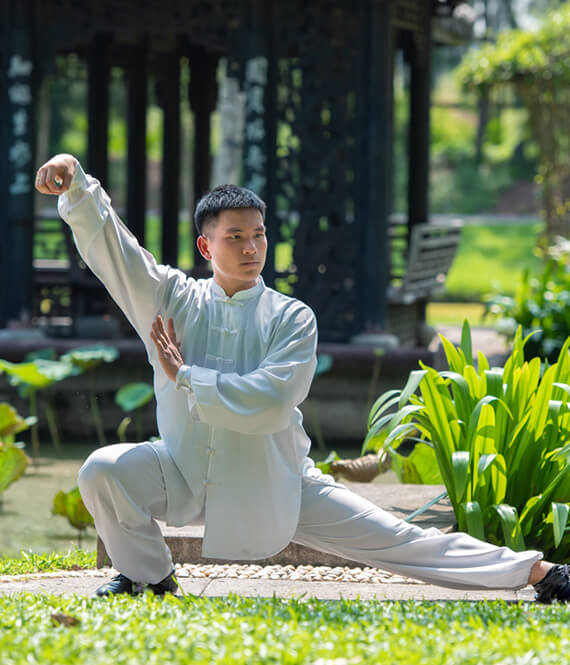
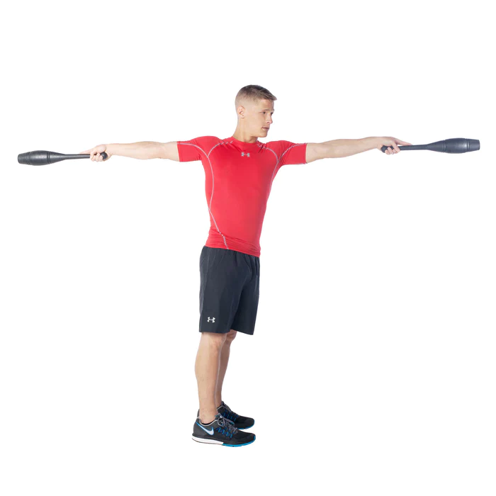
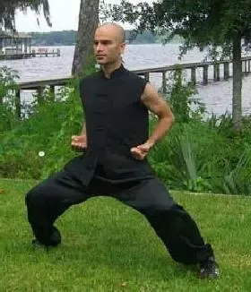

|  |
QI GONG:
60-minute sessions two to three times a week for 6 to 12 weeks significantly improved symptoms of fatigue and sleep quality. |
- Bring your hands together, palms touching and fingers pointing upward
- Slowly move your hands, keeping the chakras aligned.
- You will be compressing the air between them like an accordion would
- Move your hands slowly back and forth, varying the range of the bellows. Repeat the accordion technique in different directions
|
|  |
INDIAN CLUBS:
They improve strength, stability, and mobility of the shoulders, elbows and wrists by using fluid, full-range motions. |
- Feet straight and about hip width apart.
- Hold the clubs at your sides with your palms facing in and the top of the club pointing down. Keep a loose grip.
- Perform a slight hip hinge to bring the clubs up, and as they come up, you want to point them forward then bring your elbows in and rotate your wrists outward to circle the club around.
|
|  |
THE HORSE STANCE:
Strong stances improve hip stability, flexibility and muscle endurance. |
-
Stand up straight then put your legs apart making sure that your feet are facing forward.
- Bend your knees and lower the upper body as if you were sitting on horseback.
-
Hold your arms outward, palms parallel to your body
|